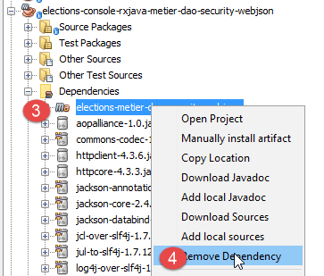
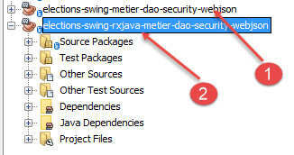
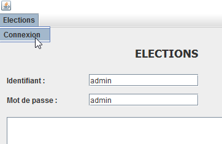

20. Asynchrone programmering met RxJava
Aanbevolen document: [Introduction à RxJava. Application aux environnements Swing et Android.]
In dit hoofdstuk komen we terug op hoofdstuk 17.6, waarin we een client/server-toepassing hadden gebouwd met de volgende architectuur:
 |
Bepaalde acties van de gebruiker op de Swing-interface in [1] leiden tot acties in de database in [3] via een netwerk HTTP [2]. Hierdoor kan het even duren voordat er een reactie op de actie van de gebruiker komt. Het zou handig zijn om een wachtindicator op de gebruikersinterface te kunnen plaatsen, met een optie om de gestarte bewerking te annuleren als deze te lang duurt. In hoofdstuk 17.6 is elke gebruikersactie waarbij informatie met de server moet worden uitgewisseld synchroon. De door de code uitgevoerde gebeurtenishandler is pas voltooid wanneer het antwoord is ontvangen. Gedurende die hele tijd staat de grafische interface stil: deze reageert niet op nieuwe acties van de gebruiker. Deze acties worden simpelweg in de wachtrij geplaatst om te worden verwerkt zodra de eventhandler die op dat moment wordt uitgevoerd, is voltooid. Als er dus een annuleerknop zou worden weergegeven, zou de gebruiker erop kunnen klikken, maar er zou niets gebeuren zolang de lopende bewerking niet is voltooid. De annuleerknop zou dan geen enkel nut hebben.
Om ervoor te zorgen dat het klikken op de annuleerknop effect heeft, moet de lopende bewerking zijn voltooid. Hiervoor moet de bewerking, die mogelijk lang duurt, asynchroon worden gestart:
- de gebeurtenishandler start de langdurige bewerking, maar wacht niet op het resultaat en geeft de controle terug aan de thread van de UI, die de gebeurtenissen van de grafische interface beheert. De langdurige bewerking wordt gestart op een andere thread dan die van de UI, waardoor deze laatste niet wordt geblokkeerd;
- als de gebruiker op de annuleerknop klikt voordat de langdurige bewerking is voltooid, kan de thread van UI, die op dat moment vrij is, deze gebeurtenis verwerken. De langdurige bewerking kan dan worden afgebroken zonder rekening te houden met het resultaat;
- als de langdurige bewerking niet is geannuleerd, zal de ontvangst van het antwoord een gebeurtenis veroorzaken in de thread van UI. Als deze thread vrij is, zal hij vervolgens de code uitvoeren die aan deze gebeurtenis is gekoppeld en die het antwoord verwerkt;
De gebruikersinterface werkt zoals voorheen. Als de responstijden van de server kort zijn, merkt de gebruiker geen verschil. Als ze merkbaar zijn, verschijnt er een annuleerknop en kan de gebruiker de lopende bewerking onderbreken.
De bibliotheek [Rx] maakt asynchrone programmering mogelijk. Het grote voordeel ervan is dat deze bibliotheek naar talrijke omgevingen is overgezet (Java, .NET, JS, ...) en dat de kennis die men in de ene omgeving opdoet, gemakkelijk kan worden toegepast in een andere omgeving. We baseren ons hier op hoofdstuk 2 van het document [Introduction à RxJava. Application aux environnements Swing et Android]. De lezer wordt uitgenodigd dit hoofdstuk te lezen. Hieronder nemen we code over uit de voorbeelden in dit hoofdstuk.
We gaan de architectuur van de applicatie als volgt verder ontwikkelen:
 |
- in [1] voegen we een laag [RxJava] in tussen de laag [swing] en de laag [métier]. De methoden van deze laag worden voortaan asynchroon aangeroepen;
We gaan in verschillende stappen te werk:
- stap 1: de laag [metier, DAO] heeft momenteel een synchrone interface met de laag [ui]. We gaan deze omzetten in een asynchrone laag [RxJava, metier, DAO];
- stap 2: we zullen de synchrone console-applicatie omzetten in een applicatie die nog steeds synchroon is, maar gebruikmaakt van de asynchrone interface [RxJava, metier, DAO];
- stap 3: we zullen de synchrone Swing-applicatie omzetten in een asynchrone Swing-applicatie;
20.1. stap 1
We zetten de huidige synchrone laag [metier, DAO] om in een asynchrone laag [RxJava, metier, DAO].
20.1.1. Aanmaken
We gaan uit van het Maven-project uit hoofdstuk 17.4, dat we openen met NetBeans:
 |  |
We dupliceren dit project [1] (kopiëren/plakken) naar een nieuw project [elections-rxjava-metier-dao-security-webjson] [2].
20.1.2. Maven-configuratie
We passen het bestand [pom.xml] van het nieuwe project aan om de afhankelijkheid van de bibliotheek [RxJava] toe te voegen:
<project xmlns="http://maven.apache.org/POM/4.0.0" xmlns:xsi="http://www.w3.org/2001/XMLSchema-instance"
xsi:schemaLocation="http://maven.apache.org/POM/4.0.0 http://maven.apache.org/xsd/maven-4.0.0.xsd">
<modelVersion>4.0.0</modelVersion>
<groupId>istia.st.elections</groupId>
<artifactId>elections-metier-dao-security-rxjava-webjson</artifactId>
<version>0.0.1-SNAPSHOT</version>
<description>Client jUnit du serveur web / jSON</description>
<name>elections-metier-dao-security-rxjava-webjson</name>
<properties>
<project.build.sourceEncoding>UTF-8</project.build.sourceEncoding>
<java.version>1.8</java.version>
</properties>
<parent>
<groupId>org.springframework.boot</groupId>
<artifactId>spring-boot-starter-parent</artifactId>
<version>1.2.7.RELEASE</version>
</parent>
<dependencies>
<!-- Spring -->
<dependency>
<groupId>org.springframework</groupId>
<artifactId>spring-web</artifactId>
</dependency>
<!-- bibliotheek jSON die door Spring wordt gebruikt -->
<dependency>
<groupId>com.fasterxml.jackson.core</groupId>
<artifactId>jackson-core</artifactId>
</dependency>
<dependency>
<groupId>com.fasterxml.jackson.core</groupId>
<artifactId>jackson-databind</artifactId>
</dependency>
<!-- component die door Spring wordt gebruikt RestTemplate -->
<dependency>
<groupId>org.apache.httpcomponents</groupId>
<artifactId>httpclient</artifactId>
</dependency>
<!-- Google Guava -->
<dependency>
<groupId>com.google.guava</groupId>
<artifactId>guava</artifactId>
<version>16.0.1</version>
<scope>test</scope>
</dependency>
<!-- logboekbibliotheek -->
<dependency>
<groupId>org.springframework.boot</groupId>
<artifactId>spring-boot-starter-logging</artifactId>
</dependency>
<!-- Spring Boot Test -->
<dependency>
<groupId>org.springframework.boot</groupId>
<artifactId>spring-boot-starter-test</artifactId>
<scope>test</scope>
</dependency>
<!-- Spring Boot -->
<dependency>
<groupId>org.springframework.boot</groupId>
<artifactId>spring-boot</artifactId>
<scope>test</scope>
</dependency>
<!-- https://mvnrepository.com/artifact/io.reactivex/rxjava -->
<dependency>
<groupId>io.reactivex</groupId>
<artifactId>rxjava</artifactId>
<version>1.2.0</version>
</dependency>
</dependencies>
<build>
<plugins>
<plugin>
<groupId>org.apache.maven.plugins</groupId>
<artifactId>maven-surefire-plugin</artifactId>
<version>2.18.1</version>
</plugin>
</plugins>
</build>
</project>
- regels 65-70: we hebben de afhankelijkheid van de bibliotheek RxJava toegevoegd;
20.1.3. Asynchrone implementatie van de laag [métier]
 |
Om de laag [RxJava, métier] te implementeren, voegen we een asynchrone interface [IRxElectionsMetier] [1] en de bijbehorende implementatie [RxElectionsMetier] [2] toe aan het project:
 |
De interface [IRxElectionsMetier] is de asynchrone interface van de laag [RxJava, métier]. De code ervan is als volgt:
package elections.security.client.metier;
import elections.security.client.entities.ListeElectorale;
import elections.security.client.entities.User;
import rx.Observable;
public interface IRxElectionsMetier {
// authenticatie
Observable<Void> authenticate(User user);
// de lijsten van de kandidaten opvragen
Observable<ListeElectorale[]> getListesElectorales(User user);
// het aantal te vervullen zetels
Observable<Integer> getNbSiegesAPourvoir(User user);
// de kiesdrempel
Observable<Double> getSeuilElectoral(User user);
// registratie van de resultaten
Observable<Void> recordResultats(User user, ListeElectorale[] listesElectorales);
// de zetelverdeling
Observable<ListeElectorale[]> calculerSieges(User user, ListeElectorale[] listesElectorales);
}
De interface [IRxElectionsMetier] neemt de methoden van de interface [IElectionsMetier] over, maar waar een methode M van de interface [IElectionsMetier] een resultaat van het type T retourneerde, levert de methode M van de interface [IRxElectionsMetier] een resultaat van het type Observable<T> op. Het type [Observable] wordt geleverd door de bibliotheek RxJava. Een type Observable<T> biedt de methode [subscribe] die het type T asynchroon ophaalt. Aan deze methode zijn drie gebeurtenissen gekoppeld:
- onSuccess(T result), die aangeeft dat er een resultaat van het type T beschikbaar is. De asynchrone bewerking kan meerdere resultaten opleveren;
- onError(Throwable th), die aangeeft dat er een fout is opgetreden tijdens de asynchrone bewerking;
- onCompleted(), die aangeeft dat de asynchrone bewerking is voltooid;
Zolang de methode [Observable.subscribe] niet wordt aangeroepen, wordt de asynchrone bewerking die aan de observable is gekoppeld niet gestart. De code die een methode M van de interface [IRxElectionsMetier] aanroept, krijgt niet het verwachte resultaat T, maar een type Observable<T> waarmee het later het resultaat T kan verkrijgen door de methode [Observable.subscribe] aan te roepen.
De implementatie [RxElectionsMetier] van de interface [IRxElectionsMetier] is als volgt:
package elections.security.client.metier;
import elections.security.client.entities.ListeElectorale;
import elections.security.client.entities.User;
import org.springframework.beans.factory.annotation.Autowired;
import org.springframework.stereotype.Component;
import rx.Observable;
@Component
public class RxElectionsMetier implements IRxElectionsMetier {
@Autowired
private IElectionsMetier metier;
@Override
public Observable<Void> authenticate(User user) {
...
}
@Override
public Observable<ListeElectorale[]> getListesElectorales(User user) {
return Observable.create(subscriber -> {
try {
// synchrone methode aanroepen en vervolgens antwoord aan de abonnee
subscriber.onNext(metier.getListesElectorales(user));
// het einde van de observatie wordt gemeld
subscriber.onCompleted();
} catch (Exception e) {
// de uitzondering wordt doorgestuurd
subscriber.onError(e);
}
});
}
@Override
public Observable<Integer> getNbSiegesAPourvoir(User user) {
...
}
@Override
public Observable<Double> getSeuilElectoral(User user) {
...
}
@Override
public Observable<Void> recordResultats(User user, ListeElectorale[] listesElectorales) {
...
}
@Override
public Observable<ListeElectorale[]> calculerSieges(User user, ListeElectorale[] listesElectorales) {
...
}
}
- regels 12-13: Spring-injectie van de synchrone bedrijfslaag;
- regels 20-34: we zullen de methode [getListesElectorales] toelichten, die in plaats van een type [ListeElectorale[]] een type [Observable<ListeElectorale[]>] retourneert;
- regels 22-32: met de statische methode [Observable.create] kan een Observable worden aangemaakt op basis van een type [Subscriber]. Het type [Subscriber] vertegenwoordigt een abonnee op de resultatenstreams die worden geproduceerd door het geobserveerde proces (de Observable). Het biedt drie methoden:
- [Subscriber.onNext] (regel 25) om een resultaat van het geobserveerde proces te ontvangen;
- [Subscriber.onError] (regel 30) om een uitzondering van het geobserveerde proces te ontvangen. Na een uitzondering zendt het type [Observable] geen resultaten meer uit;
- [Subscriber.onCompleted] (regel 27) om het signaal voor het einde van de uitzending van het geobserveerde proces te ontvangen. Hier zendt het geobserveerde proces slechts één element uit. Merk op dat dit signaal niet wordt verzonden als er een uitzondering optreedt. Dit is het standaardgedrag van Observables: het genereren van een uitzondering betekent ook het einde van de uitzendingen. De abonnees weten dit;
- regels 22-34: de methode [Observable.create] accepteert als parameter een type [Observable.OnSubscribe]. Dit type is een functionele interface. Dit begrip is geïntroduceerd met Java 8 en verwijst naar een interface met één enkele methode. Hier is de enige methode van de interface [Observable.OnSubscribe] de volgende:
Om een functionele interface met één methode m(param1, param2, ..., paramn) te implementeren, kan de volgende vereenvoudigde syntaxis worden gebruikt:
Dit is wat er in de regels 22-34 gebeurt:
- [subscriber] is de parameter van de methode [Observable.OnSubscribe.call];
- regels 23-32: de code die men aan de methode [call] wil toekennen;
- regel 25: de kieslijsten worden synchroon opgevraagd bij de laag [métier] die in regel 13 is geïnjecteerd. Er zal dus worden gewacht op het resultaat. Zodra dit wordt ontvangen, wordt het doorgegeven aan de methode [onNext] van de abonnee;
- regel 28: in geval van een fout wordt de uitzondering doorgegeven aan de methode [onError] van de abonnee;
- regel 31: er wordt slechts op één resultaat gewacht. Zodra dit is verkregen (de kieslijsten of een uitzondering), wordt aan de abonnee gemeld dat het geobserveerde proces klaar is met het genereren van resultaten;
Houd er goed rekening mee dat de methode [RxElectionsMetier] het type Observable<ListeElectorale[]> retourneert en niet het type ListeElectorale[] zelf. De aanroepende code moet de methode Observable<ListeElectorale[]>.subscribe aanroepen, zodat de code van de regels 23-33 wordt uitgevoerd en de kieslijsten via regel 25 worden geretourneerd.
De code van de andere methoden is vergelijkbaar:
package elections.security.client.metier;
import elections.security.client.entities.ListeElectorale;
import elections.security.client.entities.User;
import org.springframework.beans.factory.annotation.Autowired;
import org.springframework.stereotype.Component;
import rx.Observable;
@Component
public class RxElectionsMetier implements IRxElectionsMetier {
@Autowired
private IElectionsMetier metier;
@Override
public Observable<Void> authenticate(User user) {
return Observable.create(subscriber -> {
try {
// synchrone methode aanroepen
metier.authenticate(user);
// het einde van de observable wordt gemeld
subscriber.onCompleted();
} catch (Exception e) {
// de uitzondering wordt doorgestuurd
subscriber.onError(e);
}
});
}
@Override
public Observable<ListeElectorale[]> getListesElectorales(User user) {
return Observable.create(subscriber -> {
try {
// synchrone methode wordt aangeroepen, gevolgd door een antwoord aan de abonnee
subscriber.onNext(metier.getListesElectorales(user));
// het einde van de observable wordt gemeld
subscriber.onCompleted();
} catch (Exception e) {
// de uitzondering wordt doorgestuurd
subscriber.onError(e);
}
});
}
@Override
public Observable<Integer> getNbSiegesAPourvoir(User user) {
return Observable.create(subscriber -> {
try {
// synchrone methode wordt aangeroepen, gevolgd door een antwoord aan de abonnee
subscriber.onNext(metier.getNbSiegesAPourvoir(user));
// het einde van de observable wordt gemeld
subscriber.onCompleted();
} catch (Exception e) {
// de uitzondering wordt doorgestuurd
subscriber.onError(e);
}
});
}
@Override
public Observable<Double> getSeuilElectoral(User user) {
return Observable.create(subscriber -> {
try {
// synchrone methode aanroepen en vervolgens reageren op de abonnee
subscriber.onNext(metier.getSeuilElectoral(user));
// het einde van de observable wordt gemeld
subscriber.onCompleted();
} catch (Exception e) {
// de uitzondering wordt doorgestuurd
subscriber.onError(e);
}
});
}
@Override
public Observable<Void> recordResultats(User user, ListeElectorale[] listesElectorales) {
return Observable.create(subscriber -> {
try {
// synchrone methode wordt aangeroepen
metier.recordResultats(user, listesElectorales);
// het einde van de observable wordt gemeld
subscriber.onCompleted();
} catch (Exception e) {
// de uitzondering wordt doorgestuurd
subscriber.onError(e);
}
});
}
@Override
public Observable<ListeElectorale[]> calculerSieges(User user, ListeElectorale[] listesElectorales) {
return Observable.create(subscriber -> {
try {
// synchrone methode wordt aangeroepen, gevolgd door een antwoord aan de abonnee
subscriber.onNext(metier.calculerSieges(user, listesElectorales));
// het einde van de observable wordt gemeld
subscriber.onCompleted();
} catch (Exception e) {
// de uitzondering wordt doorgestuurd
subscriber.onError(e);
}
});
}
}
- regels 20 en 81: de methode [onNext] van de abonnee wordt niet aangeroepen omdat deze geen resultaten verwacht;
20.1.4. De tests JUnit van de laag [métier]
 |
20.1.4.1. Test01
We nemen de unit-test [Test01] weer op die in paragraaf 17.4.4 is besproken. Deze is bedoeld om synchrone aanroepen te doen naar de interface [IElectionsMetier]. We passen deze aan zodat hij synchrone aanroepen doet naar de nieuwe interface [IRxElectionsMetier]. Het is namelijk mogelijk om synchrone aanroepen te doen naar een asynchrone interface RxJava. De code ziet er dan als volgt uit:
package elections.security.client.metier.junit;
import org.junit.Assert;
import org.junit.BeforeClass;
import org.junit.Test;
import org.junit.runner.RunWith;
import org.springframework.beans.factory.annotation.Autowired;
import org.springframework.boot.test.SpringApplicationConfiguration;
import org.springframework.test.context.junit4.SpringJUnit4ClassRunner;
import com.fasterxml.jackson.core.JsonProcessingException;
import com.fasterxml.jackson.databind.ObjectMapper;
import elections.security.client.config.MetierConfig;
import elections.security.client.entities.ElectionsException;
import elections.security.client.entities.ListeElectorale;
import elections.security.client.entities.User;
import elections.security.client.metier.IRxElectionsMetier;
import rx.observables.BlockingObservable;
@SpringApplicationConfiguration(classes = MetierConfig.class)
@RunWith(SpringJUnit4ClassRunner.class)
public class Test01 {
// laag [electionsMetier]
@Autowired
private IRxElectionsMetier electionsMetier;
// mapper jSON
private final ObjectMapper mapper = new ObjectMapper();
// gebruikers
static private User admin;
static private User user;
static private User unknown;
@BeforeClass
public static void initTest() {
admin = new User("admin", "admin");
user = new User("user", "user");
unknown = new User("x", "y");
}
@Test()
public void checkUserUser() {
ElectionsException se = null;
try {
BlockingObservable.from(electionsMetier.authenticate(user)).firstOrDefault(null);
} catch (ElectionsException e) {
se = e;
}
Assert.assertNotNull(se);
Assert.assertEquals("403 Forbidden", se.getErreurs().get(0));
}
@Test()
public void checkUserUnknown() {
ElectionsException se = null;
try {
BlockingObservable.from(electionsMetier.authenticate(unknown)).firstOrDefault(null);
} catch (ElectionsException e) {
se = e;
}
Assert.assertNotNull(se);
Assert.assertEquals("401 Unauthorized", se.getErreurs().get(0));
}
@Test()
public void checkUserAdmin() {
ElectionsException se = null;
try {
BlockingObservable.from(electionsMetier.authenticate(admin)).firstOrDefault(null);
} catch (ElectionsException e) {
se = e;
}
Assert.assertNull(se);
}
/**
* vérification 1 : méthode de calcul des sièges on fixe en dur les listes
*/
@Test
public void calculSieges1() {
// de tabel met de 7 kandidatenlijsten wordt aangemaakt
ListeElectorale[] listes = new ListeElectorale[7];
listes[0] = new ListeElectorale("A", 32000, 0, false);
listes[1] = new ListeElectorale("B", 25000, 0, false);
listes[2] = new ListeElectorale("C", 16000, 0, false);
listes[3] = new ListeElectorale("D", 12000, 0, false);
listes[4] = new ListeElectorale("E", 8000, 0, false);
listes[5] = new ListeElectorale("F", 4500, 0, false);
listes[6] = new ListeElectorale("G", 2500, 0, false);
// de zetels van elke lijst worden berekend
listes = BlockingObservable.from(electionsMetier.calculerSieges(admin, listes)).first();
// de resultaten worden gecontroleerd
Assert.assertEquals(2, listes[0].getSieges());
Assert.assertFalse(listes[0].isElimine());
Assert.assertEquals(2, listes[1].getSieges());
Assert.assertFalse(listes[1].isElimine());
Assert.assertEquals(1, listes[2].getSieges());
Assert.assertFalse(listes[2].isElimine());
Assert.assertEquals(1, listes[3].getSieges());
Assert.assertFalse(listes[3].isElimine());
Assert.assertEquals(0, listes[4].getSieges());
Assert.assertFalse(listes[4].isElimine());
Assert.assertEquals(0, listes[5].getSieges());
Assert.assertTrue(listes[5].isElimine());
Assert.assertEquals(0, listes[6].getSieges());
Assert.assertTrue(listes[6].isElimine());
}
/**
* vérification 2 : méthode de calcul des sièges on demande les listes à la couche [metier] puis on fixe en dur les
* voix
*/
@Test
public void calculSieges2() {
// de tabel met de 7 kandidatenlijsten wordt aangemaakt
ListeElectorale[] listes = BlockingObservable.from(electionsMetier.getListesElectorales(admin)).first();
// de stemmen worden vastgelegd
listes[0].setVoix(32000);
listes[1].setVoix(25000);
listes[2].setVoix(16000);
listes[3].setVoix(12000);
listes[4].setVoix(8000);
listes[5].setVoix(4500);
listes[6].setVoix(2500);
// de behaalde zetels per lijst worden berekend
listes = BlockingObservable.from(electionsMetier.calculerSieges(admin, listes)).first();
// de resultaten worden gecontroleerd
Assert.assertEquals(2, listes[0].getSieges());
Assert.assertFalse(listes[0].isElimine());
Assert.assertEquals(2, listes[1].getSieges());
Assert.assertFalse(listes[1].isElimine());
Assert.assertEquals(1, listes[2].getSieges());
Assert.assertFalse(listes[2].isElimine());
Assert.assertEquals(1, listes[3].getSieges());
Assert.assertFalse(listes[3].isElimine());
Assert.assertEquals(0, listes[4].getSieges());
Assert.assertFalse(listes[4].isElimine());
Assert.assertEquals(0, listes[5].getSieges());
Assert.assertTrue(listes[5].isElimine());
Assert.assertEquals(0, listes[6].getSieges());
Assert.assertTrue(listes[6].isElimine());
}
/**
* vérification 3 méthode de calcul des sièges on provoque une exception
*/
@Test(expected = ElectionsException.class)
public void calculSieges3() {
// er wordt een tabel aangemaakt met 24 kandidatenlijsten die elk 1 stem krijgen
ListeElectorale[] listes = new ListeElectorale[25];
// de 25 lijsten krijgen hetzelfde aantal stemmen (4%)
for (int i = 0; i < listes.length; i++) {
listes[i] = new ListeElectorale("Liste" + (i + 1), 1, 0, false);
}
// berekening van de zetels – normaal gesproken zou er een ElectionsException moeten zijn
// met een kiesdrempel van 5%
BlockingObservable.from(electionsMetier.calculerSieges(admin, listes)).first();
}
/**
* enregistrement des résultats de l'élection
*
* @throws JsonProcessingException
*/
@Test
public void ecritureResultatsElections() throws JsonProcessingException {
// we stellen de tabel met de 7 kandidatenlijsten op
ListeElectorale[] listes = BlockingObservable.from(electionsMetier.getListesElectorales(admin)).first();
// de stemmen worden vastgelegd
listes[0].setVoix(32000);
listes[1].setVoix(25000);
listes[2].setVoix(16000);
listes[3].setVoix(12000);
listes[4].setVoix(8000);
listes[5].setVoix(4500);
listes[6].setVoix(2500);
// de behaalde zetels per lijst worden berekend
listes = BlockingObservable.from(electionsMetier.calculerSieges(admin, listes)).first();
// de resultaten worden weergegeven
for (int i = 0; i < listes.length; i++) {
System.out.println(mapper.writeValueAsString(listes[i]));
}
// de resultaten worden opgeslagen in de database
BlockingObservable.from(electionsMetier.recordResultats(admin, listes)).firstOrDefault(null);
// de resultaten worden gecontroleerd
listes = BlockingObservable.from(electionsMetier.getListesElectorales(admin)).first();
// de resultaten worden weergegeven
for (int i = 0; i < listes.length; i++) {
System.out.println(mapper.writeValueAsString(listes[i]));
}
Assert.assertEquals(2, listes[0].getSieges());
Assert.assertFalse(listes[0].isElimine());
Assert.assertEquals(2, listes[1].getSieges());
Assert.assertFalse(listes[1].isElimine());
Assert.assertEquals(1, listes[2].getSieges());
Assert.assertFalse(listes[2].isElimine());
Assert.assertEquals(1, listes[3].getSieges());
Assert.assertFalse(listes[3].isElimine());
Assert.assertEquals(0, listes[4].getSieges());
Assert.assertFalse(listes[4].isElimine());
Assert.assertEquals(0, listes[5].getSieges());
Assert.assertTrue(listes[5].isElimine());
Assert.assertEquals(0, listes[6].getSieges());
Assert.assertTrue(listes[6].isElimine());
}
}
Laten we de wijzigingen eens bekijken:
- regel 48: de statische methode [BlockingObservable.from(Observable).first]:
- abonneert zich op de observable-parameter van [from];
- start de uitvoering van de code die aan de observable is gekoppeld;
- wacht op het eerste resultaat. Het gaat dus om een synchrone bewerking;
We gebruiken hier de methode [firstOrDefault(null)] omdat de observable [metier.authenticate] geen resultaat retourneert wanneer deze wordt uitgevoerd. Het resultaat van de methode [firstOrDefault(null)] zal dus null zijn, een waarde die hier niet wordt gebruikt;
We passen dit patroon in de rest van de code toe telkens wanneer we de laag [métier] willen aanroepen.
De unit-test [Test01] moet slagen:
 |
Te doen: controleren of de test [Test01] slaagt.
20.1.4.2. Test02
We passen de test [Test01] aan om voortaan de asynchrone interface [IRxElectionsMetier] te testen door asynchrone aanroepen te doen naar de methoden ervan.
Laten we een eerste test bekijken:
// semafoor voor synchronisatie van threads
private CountDownLatch latch;
// -----------------------------------
private ElectionsException checkUserUserException;
@Test()
public void checkUserUser() throws InterruptedException {
// semafoor op 1
latch = new CountDownLatch((1));
// asynchrone bewerking
electionsMetier.authenticate(user).subscribeOn(Schedulers.io())
.subscribe((result) -> {
},
(th) -> {
checkUserUserException = (ElectionsException) th;
latch.countDown();
},
() -> {
latch.countDown();
});
// wachten op semafoor
latch.await();
// controle van de resultaten
Assert.assertNotNull(checkUserUserException);
Assert.assertEquals("403 Forbidden", checkUserUserException.getErreurs().get(0));
}
- regel 2: een semafoor is een hulpmiddel dat wordt gebruikt om threads onderling te synchroniseren. Threads zijn uitvoeringsstromen die parallel worden uitgevoerd. Om een taak T1 uit te voeren, kan de thread [Thread1] nodig hebben dat een taak T2, uitgevoerd door een thread [Thread2], is voltooid. De thread wacht dan tot de thread [Thread2] hem een signaal stuurt dat aangeeft dat de taak T2 is voltooid. Er zijn verschillende manieren om deze synchronisatie tussen twee threads te beheren. De hier gebruikte methode is als volgt:
- regel 10: de thread [Thread1] maakt een semafoor aan met de waarde 1;
- regel 12: de thread [Thread1] maakt een thread [Thread2] aan en start deze op. Dit wordt bereikt met de volgende syntaxis:
electionsMetier.authenticate(user).subscribeOn(Schedulers.io())
De methode [Observable.subscribeOn] bepaalt de thread waarop het geobserveerde proces zal worden uitgevoerd. De parameter van [subscribeOn] is een threadpool. De bibliotheek RxJava biedt er verschillende aan, afgestemd op verschillende situaties. De pool [Schedulers.io()] wordt aanbevolen voor netwerkoperaties;
- (vervolg)
- regels 12-13: de bewerking
electionsMetier.authenticate(user).subscribeOn(Schedulers.io()).subscribe(...)
voert de synchrone bewerking uit die is ingekapseld in de observable [authenticate(user)]. Maar omdat deze synchrone bewerking wordt gestart op een andere thread dan de thread [Thread1], wacht deze laatste niet op het antwoord van de methode [subscribe] en gaat hij verder met de volgende instructie;
- (vervolg)
- regel 23: de thread [Thread1] stopt en wacht tot de semafoor op 0 komt te staan (deze staat momenteel op 1);
- regels 13-21: de methode [subscribe] neemt drie lambda-functies als parameters:
- de eerste, [(result)->{...}], wordt aangeroepen telkens wanneer de observable [authenticate(user)] een resultaat [result] uitzendt. Hier hebben we een observable [authenticate(user)] die iets doet, maar geen resultaat uitzendt. De lambda [(result)->{}] zal dus nooit worden aangeroepen. Daarom is de code ervan hier leeg: [{}];
- de tweede, [(th)->{...}], ontvangt als parameter een type [Throwable]. Deze wordt aangeroepen wanneer er tijdens de uitvoering van de observable een uitzondering optreedt. Hier verwerken we de parameter [Throwable th] als volgt:
- regel 16: we slaan deze op in een veld van de testklasse van het type [ElectionsException], omdat de uitgevoerde observable alleen dit type uitzondering genereert;
- regel 17: we zetten de semafoor op 0 om aan te geven dat de thread [Thread2] zijn werk heeft voltooid;
- de derde, [()->{...}], wordt aangeroepen wanneer de observable geen elementen meer te verzenden heeft. We verwerken deze gebeurtenis als volgt:
- regel 20: we zetten de semafoor op 0 om aan te geven dat de thread [Thread2] zijn werk heeft voltooid;
Let wel: de derde lambda wordt niet aangeroepen als er een uitzondering optreedt. Daarom moesten we de semafoor ook al op 0 zetten in regel 17;
- regel 25: wanneer we bij deze regel aankomen, heeft de observable zijn werk voltooid. We kunnen dan dezelfde controles uitvoeren als in de test [Test01];
Laten we nog een test bekijken:
// -----------------------------------
private ElectionsException calculSieges1Exception;
private ListeElectorale[] listesCalculSieges1;
@Test
public void calculSieges1() throws InterruptedException {
// de tabel met de 7 kandidaatlijsten wordt aangemaakt
ListeElectorale[] listes = new ListeElectorale[7];
listes[0] = new ListeElectorale("A", 32000, 0, false);
listes[1] = new ListeElectorale("B", 25000, 0, false);
listes[2] = new ListeElectorale("C", 16000, 0, false);
listes[3] = new ListeElectorale("D", 12000, 0, false);
listes[4] = new ListeElectorale("E", 8000, 0, false);
listes[5] = new ListeElectorale("F", 4500, 0, false);
listes[6] = new ListeElectorale("G", 2500, 0, false);
// semafoor op 1
latch = new CountDownLatch((1));
// asynchrone bewerking
// de zetels van elke lijst worden berekend
electionsMetier.calculerSieges(admin, listes).subscribeOn(Schedulers.io())
.subscribe((result) -> {
listesCalculSieges1 = result;
},
(th) -> {
calculSieges1Exception = (ElectionsException) th;
latch.countDown();
},
() -> {
latch.countDown();
});
// wachten op semafoor
latch.await();
// de resultaten worden gecontroleerd
Assert.assertNull(calculSieges1Exception);
Assert.assertEquals(2, listesCalculSieges1[0].getSieges());
Assert.assertFalse(listesCalculSieges1[0].isElimine());
Assert.assertEquals(2, listesCalculSieges1[1].getSieges());
Assert.assertFalse(listesCalculSieges1[1].isElimine());
Assert.assertEquals(1, listesCalculSieges1[2].getSieges());
Assert.assertFalse(listesCalculSieges1[2].isElimine());
Assert.assertEquals(1, listesCalculSieges1[3].getSieges());
Assert.assertFalse(listesCalculSieges1[3].isElimine());
Assert.assertEquals(0, listesCalculSieges1[4].getSieges());
Assert.assertFalse(listesCalculSieges1[4].isElimine());
Assert.assertEquals(0, listesCalculSieges1[5].getSieges());
Assert.assertTrue(listesCalculSieges1[5].isElimine());
Assert.assertEquals(0, listesCalculSieges1[6].getSieges());
Assert.assertTrue(listesCalculSieges1[6].isElimine());
}
- regels 20-30: asynchrone uitvoering van de observable [electionsMetier.calculerSieges(admin, listes)];
- regels 21-23: de uitvoering van de observable levert een type [ListeElectorale[]] op, dat wordt opgeslagen in een veld van de testklasse, regel 3;
- regels 34-48: dit zijn de controles van de test [Test01], waaraan de controle op regel 34 is toegevoegd om te controleren of er geen uitzondering is opgetreden;
De volledige test [Test02] is beschikbaar in het cursusmateriaal.
Opdracht: voer de test [Test02] uit en controleer of deze slaagt.
20.1.4.3. Test03
De test [Test03] doet hetzelfde als de test [Test01]: hij test de interface [IRxElectionsMetier] door middel van synchrone aanroepen naar deze interface. Dit is een kopie van de test [Test02], op twee details na:
- de observables worden niet langer uitgevoerd in een andere thread dan die waarin de tests worden uitgevoerd. Wanneer de thread [Thread1] de methode [subscribe] van een observable uitvoert, start deze een bewerking HTTP naar de server, eveneens op de thread [Thread1]. De gehele methode [subscribe] wordt dan synchroon;
- aangezien er nog maar één thread is, is threadsynchronisatie niet langer nodig en verdwijnt de semafoor;
Hier volgen twee testvoorbeelden:
// -----------------------------------
private ElectionsException checkUserUserException;
@Test()
public void checkUserUser() throws InterruptedException {
// synchrone bewerking
electionsMetier.authenticate(user)
.subscribe((result) -> {
},
(th) -> {
checkUserUserException = (ElectionsException) th;
},
() -> {
});
// controle van de resultaten
Assert.assertNotNull(checkUserUserException);
Assert.assertEquals("403 Forbidden", checkUserUserException.getErreurs().get(0));
}
- regel 7: standaard wordt de methode [electionsMetier.authenticate(user).subscribe] uitgevoerd in de thread van de aanroepende code. We hebben dus te maken met een synchrone bewerking;
// -----------------------------------
private ElectionsException calculSieges1Exception;
private ListeElectorale[] listesCalculSieges1;
@Test
public void calculSieges1() throws InterruptedException {
// de tabel met de 7 kandidatenlijsten wordt aangemaakt
ListeElectorale[] listes = new ListeElectorale[7];
listes[0] = new ListeElectorale("A", 32000, 0, false);
listes[1] = new ListeElectorale("B", 25000, 0, false);
listes[2] = new ListeElectorale("C", 16000, 0, false);
listes[3] = new ListeElectorale("D", 12000, 0, false);
listes[4] = new ListeElectorale("E", 8000, 0, false);
listes[5] = new ListeElectorale("F", 4500, 0, false);
listes[6] = new ListeElectorale("G", 2500, 0, false);
// synchrone bewerking
// de zetels van elke lijst worden berekend
electionsMetier.calculerSieges(admin, listes)
.subscribe((result) -> {
listesCalculSieges1 = result;
},
(th) -> {
calculSieges1Exception = (ElectionsException) th;
},
() -> {
});
// de resultaten worden gecontroleerd
Assert.assertNull(calculSieges1Exception);
Assert.assertEquals(2, listesCalculSieges1[0].getSieges());
Assert.assertFalse(listesCalculSieges1[0].isElimine());
Assert.assertEquals(2, listesCalculSieges1[1].getSieges());
Assert.assertFalse(listesCalculSieges1[1].isElimine());
Assert.assertEquals(1, listesCalculSieges1[2].getSieges());
Assert.assertFalse(listesCalculSieges1[2].isElimine());
Assert.assertEquals(1, listesCalculSieges1[3].getSieges());
Assert.assertFalse(listesCalculSieges1[3].isElimine());
Assert.assertEquals(0, listesCalculSieges1[4].getSieges());
Assert.assertFalse(listesCalculSieges1[4].isElimine());
Assert.assertEquals(0, listesCalculSieges1[5].getSieges());
Assert.assertTrue(listesCalculSieges1[5].isElimine());
Assert.assertEquals(0, listesCalculSieges1[6].getSieges());
Assert.assertTrue(listesCalculSieges1[6].isElimine());
}
Te doen: voer de test [Test03] uit en controleer of deze slaagt.
20.2. stap 2
We zetten nu de synchrone console-applicatie uit hoofdstuk 17.5 om naar een applicatie die nog steeds synchroon is, maar gebruikmaakt van de asynchrone interface [RxJava, metier, DAO];
 |
We gaan uit van het project [elections-console-metier-dao-security-webjson] [1] uit hoofdstuk 17.5, dat we dupliceren in een nieuw project [elections-console-rxjava- metier-dao-security-webjson] [2]:
 |  |
- in [3-4]; in het nieuwe project verwijderen we de afhankelijkheid van de oude synchrone laag [métier];
 |  |
- in [5-9] wordt een afhankelijkheid van de nieuwe asynchrone laag [métier] toegevoegd;
 |  |
- in [10-14] wordt de klasse [ElectionsConsole] hernoemd naar [ElectionsConsole01];
Evenzo wordt de klasse [BootElectionsConsole] hernoemd naar [BootElectionsConsole01]:
 |
De huidige code van de klasse [BootElectionsConsole01] is als volgt:
package elections.security.client.boot;
import elections.security.client.console.IElectionsUI;
public class BootElectionsConsole01 extends AbstractBootElections{
public static void main(String[] arguments) {
new BootElectionsConsole01().run();
}
@Override
protected IElectionsUI getUI() {
return ctx.getBean("electionsConsole",IElectionsUI.class);
}
}
- regel 13: omdat de naam van de klasse [ElectionsConsole] is gewijzigd in [ElectionsConsole01], moet er nu worden geschreven:
return ctx.getBean("electionsConsole01",IElectionsUI.class);
Laten we teruggaan naar de code van de klasse [ElectionsConsole01]:
@Component
public class ElectionsConsole01 implements IElectionsUI {
@Autowired
private IElectionsMetier electionsMetier;
@Autowired
private User admin;
@Override
public void run() {
// de deelnemende lijsten
ListeElectorale[] listes;
// gegevensinvoer
try (Scanner clavier = new Scanner(System.in)) {
// de deelnemende lijsten worden opgevraagd bij de laag [metier]
listes = electionsMetier.getListesElectorales(admin);
...
// de zetels worden berekend
listes=electionsMetier.calculerSieges(admin,listes);
// de resultaten worden geregistreerd
electionsMetier.recordResultats(admin,listes);
...
}
Als we het voorbeeld van de test [Test01] uit paragraaf 20.1.4.1 volgen, zullen de regels 5, 17, 20 en 22 als volgt veranderen:
@Component
public class ElectionsConsole01 implements IElectionsUI {
@Autowired
private IRxElectionsMetier electionsMetier;
@Autowired
private User admin;
@Override
public void run() {
// de lijsten die meedoen
ListeElectorale[] listes;
// gegevensinvoer
try (Scanner clavier = new Scanner(System.in)) {
// de deelnemende lijsten worden opgevraagd bij de laag [metier]
listes = BlockingObservable.from(electionsMetier.getListesElectorales(admin)).first();
...
// de zetels worden berekend
listes = BlockingObservable.from(electionsMetier.calculerSieges(admin, listes)).first();
// de resultaten worden opgeslagen
BlockingObservable.from(electionsMetier.recordResultats(admin, listes));
...
}
Opdracht: configureer het project om de klasse [BootElectionsConsole01] uit te voeren met de drie parameters [SS, Heures travaillées, Jours travaillés] en controleer of de uitvoering van het aldus geconfigureerde project de verwachte resultaten oplevert.
Opdracht: configureer het project om het paar [BootElectionsConsole02, ElectionsConsole02] uit te voeren, waarbij de klasse [ElectionsConsole02] is geschreven volgens het model van de test [Test02] uit paragraaf 20.1.4.2.
Opdracht: configureer het project om het koppel [BootElectionsConsole03, ElectionsConsole03] uit te voeren, waarbij de klasse [ElectionsConsole03] is geschreven volgens het model van de test [Test03] uit paragraaf 20.1.4.3.
20.3. stap 3
We gaan nu verder met het porten van de Swing-applicatie naar een asynchrone omgeving.
 |
We beginnen met het dupliceren van het project [elections-swing-metier-dao-security-webjson] [1] uit hoofdstuk 17.6 naar een nieuw project [elections-swing-rxjava-metier-dao-security-webjson] [2]:
 |  |
- in [3, 4] verwijderen we de afhankelijkheid van de synchrone laag [console];
 |  |
- in [5-9] voegen we een afhankelijkheid toe van de asynchrone console-laag;
De laag [swing] zal echte asynchrone aanroepen doen naar de laag [métier]. Bij het aanroepen van een methode daarvan zullen er twee threads zijn:
- de thread van UI, die de gebeurtenissen afhandelt;
- een I/O-thread die de aanroep HTTP naar de server uitvoert;
Gedurende de gehele asynchrone aanroep zouden we een laadbeeld en een annuleerknop moeten weergeven. Dat doen we hier niet; dit wordt u voorgesteld als een verbetering van de applicatie. De wijzigingen vinden plaats in de twee klassen die de [métier]-laag aanroepen:
 |
20.3.1. Maven-configuratie
We gaan hier de bibliotheek [RxSwing] gebruiken, die aan de bibliotheek [RxJava] functionaliteiten toevoegt die alleen in een Swing-omgeving beschikbaar zijn. Hiervoor passen we het bestand [pom.xml] als volgt aan:
<project xmlns="http://maven.apache.org/POM/4.0.0" xmlns:xsi="http://www.w3.org/2001/XMLSchema-instance"
xsi:schemaLocation="http://maven.apache.org/POM/4.0.0 http://maven.apache.org/xsd/maven-4.0.0.xsd">
<modelVersion>4.0.0</modelVersion>
<groupId>istia.st.elections</groupId>
<artifactId>elections-swing-rxjava-metier-dao-security-webjson</artifactId>
<version>0.0.1-SNAPSHOT</version>
<name>elections-swing-rxjava-metier-dao-security-webjson</name>
<description>couche swing asynchrone du client web / jSON</description>
<properties>
<project.build.sourceEncoding>UTF-8</project.build.sourceEncoding>
<java.version>1.8</java.version>
<maven.compiler.source>1.8</maven.compiler.source>
<maven.compiler.target>1.8</maven.compiler.target>
</properties>
<dependencies>
<!-- RxSwing -->
<!-- https://mvnrepository.com/artifact/io.reactivex/rxswing -->
<dependency>
<groupId>io.reactivex</groupId>
<artifactId>rxswing</artifactId>
<version>0.27.0</version>
</dependency>
<!-- lagere lagen -->
<dependency>
<groupId>istia.st.elections</groupId>
<artifactId>elections-console-rxjava-metier-dao-security-webjson</artifactId>
<version>0.0.1-SNAPSHOT</version>
</dependency>
</dependencies>
</project>
20.3.2. De klasse [ElectionsConnectForm]
Bij asynchrone werking ziet de klasse [ElectionsConnectForm] er als volgt uit:
package elections.security.client.swing;
import elections.security.client.console.IElectionsUI;
import elections.security.client.entities.User;
import java.awt.Dimension;
import java.awt.Toolkit;
import javax.swing.SwingUtilities;
import elections.security.client.metier.IRxElectionsMetier;
import org.springframework.beans.factory.annotation.Autowired;
import org.springframework.stereotype.Component;
import rx.schedulers.Schedulers;
import rx.schedulers.SwingScheduler;
@Component
public class ElectionsConnectForm extends AbstractElectionsConnectForm implements IElectionsUI {
private static final long serialVersionUID = 1L;
// verwijzing naar de asynchrone laag [métier]
@Autowired
private IRxElectionsMetier metier;
// aangemelde gebruiker
private User user;
// hoofdformulier
@Autowired
private ElectionsMainForm electionsMainForm;
// sessie UI
@Autowired
private UiSession uiSession;
@Override
protected void doConnect() {
if (isPageValid()) {
// gebruikersauthenticatie
metier.authenticate(user).subscribeOn(Schedulers.io()).observeOn(SwingScheduler.getInstance()).subscribe(
// er is geen antwoord
(result) -> {
},
// uitzonderingsafhandeling
(th) -> {
// de fout wordt geregistreerd
String info = getInfoForException("Les erreurs suivantes se sont produites :", th);
// de informatie wordt weergegeven
jTextPaneErreurs.setText(info);
jTextPaneErreurs.setCaretPosition(0);
},
// de authenticatie is voltooid
() -> {
// de gebruiker wordt in de sessie opgeslagen
uiSession.setUser(user);
// het inlogscherm wordt verborgen
setVisible(false);
// het hoofdscherm wordt weergegeven
electionsMainForm.run();
});
}
}
// initialisaties
@Override
protected void init() {
...
}
@Override
public void run() {
// de grafische interface wordt weergegeven
SwingUtilities.invokeLater(new Runnable() {
public void run() {
init();
setVisible(true);
}
});
}
private boolean isPageValid() {
...
}
private String getInfoForException(String message, Throwable ex) {
...
}
}
- regels 36-63: de methode [doConnect] wordt uitgevoerd wanneer de gebruiker op de menuoptie [Connexion] drukt:
 |
Het zit hem allemaal in regel 40:
metier.authenticate(user).subscribeOn(Schedulers.io()).observeOn(SwingScheduler.getInstance()).subscribe(...)
- het waargenomen proces is [metier.authenticate(user)];
- het wordt uitgevoerd op een I/O-thread uit de pool [Schedulers.io()];
- het wordt geobserveerd in de thread van UI, de thread die de gebeurtenissen van de Swing-interface [observeOn(SwingScheduler.getInstance())] beheert. Deze thread wordt verkregen via de methode [SwingScheduler.getInstance()], waarbij [SwingScheduler] een klasse is die wordt geleverd door de bibliotheek [RxSwing]. Dit is verplicht. Zodra het resultaat van de asynchrone bewerking beschikbaar is, wordt dit vaak gebruikt om elementen van de Swing-interface te wijzigen. Deze interface kan echter alleen worden gewijzigd in de thread van de UI; anders treedt er een uitzondering op. De regels 41-61 moeten dus worden uitgevoerd in de thread van UI. Dit wordt hier gewaarborgd door de methode [observeOn(SwingScheduler.getInstance())];
Laten we de rest van de code toelichten:
- regels 42-43: deze regels zijn bedoeld om te voldoen aan de syntaxis van de methode [subscribe]. Ze zullen nooit worden uitgevoerd omdat het proces [metier.authenticate(user)] geen resultaat oplevert;
- regels 35-52: bij ontvangst van een uitzondering wordt deze weergegeven;
- regels 54-61: worden uitgevoerd wanneer het proces [metier.authenticate(user)] aangeeft dat het klaar is met verzenden;
20.3.3. De klas [ElectionsMainForm]
|
20.3.3.1. Initialisatie van de grafische interface
package elections.security.client.swing;
import elections.security.client.console.IElectionsUI;
import elections.security.client.entities.ListeElectorale;
import elections.security.client.entities.User;
import elections.security.client.metier.IRxElectionsMetier;
import org.springframework.beans.factory.annotation.Autowired;
import org.springframework.stereotype.Component;
import rx.schedulers.Schedulers;
import rx.schedulers.SwingScheduler;
import javax.swing.*;
import java.awt.*;
import java.util.ArrayList;
import java.util.List;
@Component
public class ElectionsMainForm extends AbstractElectionsMainForm implements IElectionsUI {
private static final long serialVersionUID = 1L;
// verwijzing naar de asynchrone laag [métier]
@Autowired
private IRxElectionsMetier metier;
// sessie UI
@Autowired
private UiSession uiSession;
// aangemelde gebruiker
private User user;
// sjablonen van de lijsten JList
private DefaultListModel<String> modèleNomsVoix = null;
private DefaultListModel<String> modèleRésultats = null;
// de lijsten in de competitie
private ListeElectorale[] listes;
// door de gebruiker ingevoerde lijsten
private final List<ListeElectorale> listesSaisies = new ArrayList<>();
private ListeElectorale[] tListesSaisies;
// initialisaties
@Override
protected void init() {
// genereren van componenten door de bovenliggende klasse
super.init();
// formulierstatus
Utilitaires.setEnabled(new JLabel[]{jLabelAjouter, jLabelCalculer, jLabelEnregistrer, jLabelSupprimer}, false);
Utilitaires.setEnabled(
new JMenuItem[]{jMenuItemAjouter, jMenuItemCalculer, jMenuItemEnregistrer, jMenuItemSupprimer}, false);
// het venster centreren
Dimension screenSize = Toolkit.getDefaultToolkit().getScreenSize();
Dimension frameSize = getSize();
if (frameSize.height > screenSize.height) {
frameSize.height = screenSize.height;
}
if (frameSize.width > screenSize.width) {
frameSize.width = screenSize.width;
}
setLocation((screenSize.width - frameSize.width) / 2, (screenSize.height - frameSize.height) / 2);
// aangemelde gebruiker
user = uiSession.getUser();
// lokale initialisaties
modèleNomsVoix = new DefaultListModel<>();
jListNomsVoix.setModel(modèleNomsVoix);
modèleRésultats = new DefaultListModel<>();
jListResultats.setModel(modèleRésultats);
// lijsten worden opgevraagd bij de laag [métier]
metier.getListesElectorales(user).subscribeOn(Schedulers.io()).observeOn(SwingScheduler.getInstance())
.subscribe(
// antwoord
listesElectorales -> {
// de lijsten worden opgeslagen
listes = listesElectorales;
},
// uitzondering
(th) -> showException(th),
// waarneembaar einde
() -> {
// volgende stap
doInitStep2();
});
}
...
- regel 46: de methode [init] wordt uitgevoerd wanneer het bijbehorende venster wordt weergegeven. Deze methode dient om de onderstaande componenten [1-3] te initialiseren:
 |
- regels 71-85: de kandidatenlijsten worden asynchroon opgevraagd (component [1]);
- regel 71: het geobserveerde proces is [metier.getListesElectorales(user)]. Het wordt uitgevoerd op een I/O-thread [subscribeOn(Schedulers.io())] en geobserveerd op de thread van UI [observeOn(SwingScheduler.getInstance()];
- regels 74-77: het door het geobserveerde proces geretourneerde resultaat wordt opgeslagen in het veld [listes] van regel 38;
- regel 79: een eventuele uitzondering wordt verwerkt door de volgende methode:
private void showException(Throwable th) {
// de uitzondering wordt weergegeven
jTextPaneMessages.setText(getInfoForException("Les erreurs suivantes se sont produites : ", th));
jTextPaneMessages.setCaretPosition(0);
}
- regels 81-84: aan het einde van het geobserveerde proces worden de regels 81-84 uitgevoerd. Deze regels worden niet uitgevoerd als er een uitzondering is opgetreden. De methode [doInitStep2] voert stap 2 van de initialisatie als volgt uit:
private void doInitStep2() {
// de namen van de lijsten worden gekoppeld aan de keuzelijst jComboBoxNomsListes
for (int i = 0; i < listes.length; i++) {
jComboBoxNomsListes.addItem(String.format("%s - %s", listes[i].getId(), listes[i].getNom()));
}
// aantal te vervullen zetels
metier.getNbSiegesAPourvoir(user).subscribeOn(Schedulers.io()).observeOn(SwingScheduler.getInstance())
.subscribe(
// antwoord
nbSiegesAPourvoir -> {
// het label dat aan deze informatie is gekoppeld, wordt geïnitialiseerd
jLabelSAP.setText(jLabelSAP.getText() + nbSiegesAPourvoir);
},
// uitzondering
(th) -> showException(th),
// einde waarneembaar
() -> {
// volgende stap
doInitStep3();
});
}
- regels 3-5: het resultaat van de vorige stap wordt gebruikt om de vervolgkeuzelijst te vullen met de namen van de kandidatenlijsten;
- regels 7-20: het aantal te vervullen zetels wordt asynchroon opgevraagd;
- regel 7: het geobserveerde proces is [metier.getNbSiegesAPourvoir(user)]. Dit wordt uitgevoerd op een I/O-thread [subscribeOn(Schedulers.io())] en geobserveerd op de thread van UI [observeOn(SwingScheduler.getInstance()];
- regels 10-13: het door het proces geretourneerde resultaat wordt gebruikt om de grafische interface bij te werken;
- regel 15: een eventuele uitzondering wordt weergegeven;
- regels 17-20: bij ontvangst van het eindsignaal van de observable gaat men over naar stap 3 van het initialisatieproces;
Stap 3 van de initialisatie wordt uitgevoerd door de volgende code:
private void doInitStep3() {
// kiesdrempel
metier.getSeuilElectoral(user).subscribeOn(Schedulers.io()).observeOn(SwingScheduler.getInstance())
.subscribe(
// antwoord
seuilElectoral -> {
// het label dat aan deze informatie is gekoppeld, wordt geïnitialiseerd
jLabelSE.setText(jLabelSE.getText() + seuilElectoral);
},
// uitzondering
(th) -> showException(th),
// einde van de waarneming
() -> {
});
}
- regels 3-4: de kiesdrempel wordt asynchroon opgevraagd;
- regel 3: het geobserveerde proces is [metier.getSeuilElectoral(user)]. Het wordt uitgevoerd op een I/O-thread [subscribeOn(Schedulers.io())] en geobserveerd op de thread van UI [observeOn(SwingScheduler.getInstance()];
- regels 6-9: het door het proces geretourneerde resultaat wordt gebruikt om de grafische interface bij te werken;
- regel 11: een eventuele uitzondering wordt weergegeven;
- regels 13-14: bij ontvangst van het eindsignaal van de observable gebeurt er niets: het initialisatieproces van de grafische interface is voltooid;
20.3.3.2. Berekening van het aantal zetels dat door de verschillende lijsten is behaald
De methode [doCalculer] heeft als functie het aantal zetels te berekenen dat door de verschillende lijsten is behaald:
@Override
protected void doCalculer() {
tListesSaisies = listesSaisies.toArray(new ListeElectorale[0]);
// berekening van de zetels
String info = null;
metier.calculerSieges(user, tListesSaisies).subscribeOn(Schedulers.io()).observeOn(SwingScheduler.getInstance())
.subscribe(
// verwerking van het resultaat
result -> consumeResultSieges(result),
// afhandeling van uitzondering
th -> showException(th),
// waarneembaar einde
() -> {
}
);
}
- regels 6-15: de door de verschillende lijsten behaalde zetels worden asynchroon berekend;
- regel 6: het geobserveerde proces is [metier.calculerSieges(user, tListesSaisies)]. Dit wordt uitgevoerd op een I/O-thread [subscribeOn(Schedulers.io())] en geobserveerd op de thread van UI [observeOn(SwingScheduler.getInstance()];
- regel 9: het door het proces geretourneerde resultaat wordt gebruikt door de methode [consumeResultSieges];
- regel 11: een eventuele uitzondering wordt weergegeven;
- regels 13-14: bij ontvangst van het eindsignaal van de observable gebeurt er niets;
Regel 9: de methode [consumeResultSieges] verwerkt het door het geobserveerde proces geretourneerde resultaat, waarbij de kandidatenlijsten met hun velden [sieges, elimine] worden bijgewerkt:
private void consumeResultSieges(ListeElectorale[] tListesSaisies) {
// het resultaat wordt opgeslagen
this.tListesSaisies = tListesSaisies;
// weergave van de resultaten
modèleRésultats.clear();
for (int i = 0; i < tListesSaisies.length; i++) {
modèleRésultats.addElement(tListesSaisies[i].toString());
}
// formulierstatus bijwerken
Utilitaires.setEnabled(new JLabel[]{jLabelEnregistrer}, true);
Utilitaires.setEnabled(new JLabel[]{jLabelCalculer}, false);
Utilitaires.setEnabled(new JMenuItem[]{jMenuItemEnregistrer}, true);
Utilitaires.setEnabled(new JMenuItem[]{jMenuItemCalculer}, false);
jTextPaneMessages.setText("Calcul terminé");
}
- regels 4-14: het verkregen resultaat wordt gebruikt om de grafische interface bij te werken;
20.3.3.3. Registratie van de verkiezingsuitslag
De verkiezingsuitslagen worden vastgelegd met de volgende methode [doEnregistrer]:
@Override
protected void doEnregistrer() {
// opslag wordt aangevraagd bij de laag [métier]
metier.recordResultats(user, tListesSaisies).subscribeOn(Schedulers.io()).observeOn(SwingScheduler.getInstance())
.subscribe(
// verwerking van het resultaat – hier is er geen
(param) -> {
},
// verwerking van de uitzondering
(th) -> showException(th),
// waarneembaar einde
() -> {
// formulier bijwerken
Utilitaires.setEnabled(new JLabel[]{jLabelEnregistrer}, false);
Utilitaires.setEnabled(new JMenuItem[]{jMenuItemEnregistrer}, false);
jTextPaneMessages.setText("Enregistrement des résultats réalisé");
}
);
}
- regels 4-17: de verkiezingsresultaten worden asynchroon opgeslagen;
- regel 4: het geobserveerde proces is [metier.recordResultats(user, tListesSaisies)]. Het wordt uitgevoerd op een I/O-thread [subscribeOn(Schedulers.io())] en geobserveerd op de thread van UI [observeOn(SwingScheduler.getInstance()];
- regels 7-8: deze regels worden nooit uitgevoerd omdat het geobserveerde proces geen resultaat oplevert;
- regel 10: een eventuele uitzondering wordt weergegeven;
- regels 14-16: bij ontvangst van het eindsignaal van de observable wordt de grafische interface bijgewerkt;
Te doen: controleer of de Swing-toepassing werkt. Pas vervolgens de grafische interface en de code aan, zodat bij een asynchrone bewerking met de webserver / jSON een laadbeeld verschijnt, evenals een optie om de lopende bewerking te annuleren.